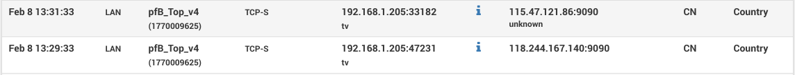
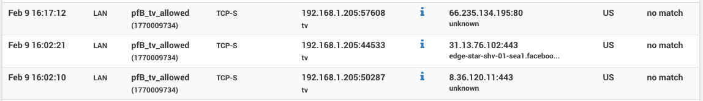
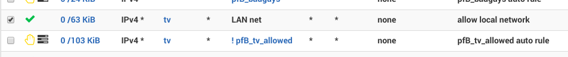
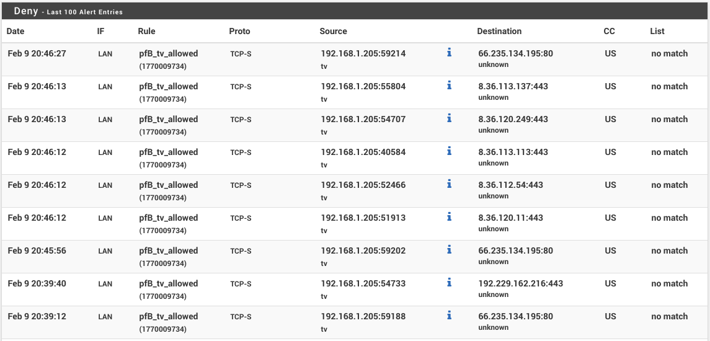

Like millions of other folks, I have a smart TV,
or simply a tiny android box that lets me play Youtube music and Amazon Prime videos.
I also like to run pfSense firewall, with pretty much
out-of-the-box setup.
While checking firewall logs, and reviewing the usual scans for ports 23/22 from all over the world,
I started blocking certain geolocations and noticed that every minute or so my smart TV was
pinging two IPs in China.

Launching adb, android debugger and digging deeper -- the app responsible for those pings is
com.waxrain.airplaydmr2,
one of only 3 custom apps installed on the device.
This got me curious of what other traffic this little android box is leaking. Among the
usual Nvidia telemetry spam (even though it was explicitly disabled in the OS setttings),
there is Adobe and Facebook broadcasts. Neither of which I care about.

With help from pfBlockerNG package, however, we can easily silence this chatter down.
Strategy
First, we need to decided which traffic we care about.
I only care about youtube and amazon at this point. And while those two also broadcast a ton of telemetry data
we'll just have to take the bad with the good here. So outside of those two services,
the smart tv box should be completely silent and invisible to the outside world.
To start blocking WAN traffic, we will build a pfBlockerNG rule and isolate
google/amazon
using ASNs.
Upon feed updates, pfBlockerNG will resolve those ASNs to lots of IP addresses belonging to those organizations.
To make firewall rules easier, first we build a rule that blocks traffic to google/amazon
and then inverse the source/destination (effectively blocking all other traffic instead).
Adding firewall rules
Navigate to Firewall / pfBlockerNG / IPv4, click Add. Set List Action: Deny Both, on
Advanced Inbound add IP of your smart TV to Custom Destination, and similarly on
Advanced Outbound to Custom Source. In IPv4 Custom List tab, check Enable Domain/AS
and paste following ASNs into Custom Address(es).
AS15169
AS36040
AS22577
AS36561
AS14618
AS16509
AS11344
AS19047
AS7224
AS6432
AS16550
AS62785
AS58588
Once the rule is saved, run pfBlockerNG update and reload steps on Firewall / pfBlockerNG / Update page.
The log should state that a few hundred IPs have been added.
pfBlockerNG essentially builds multiple, regular pfSense firewall rules
which we'll slightly adjust to complete the setup.
On WAN and LAN rules ( Firewall / Rules / WAN ) edit the rule created by pfBlockerNG to Invert match on
the Source. And similarly on LAN page, modify the rule to Invert match on Destination.
If you still want your smart TV to communicate to other devices on LAN, like Android debugging over WiFi or DNS
then add a new rule on LAN page, set Action to Pass, Source: smart TV IP, Destination: LAN net,
and make sure it's above the pfBlockerNG rule. In the end it should look something like this:

Testing
When all is done, you can see successful traffic blocks by checking Firewall / pfBlockerNG / Alerts

Another way to test is to block a different device on your network, like a smart phone, and verify that
you can still reach youtube and amazon but nothing else. {kind=link}
{kind=link}
{kind=link}
{kind=link}